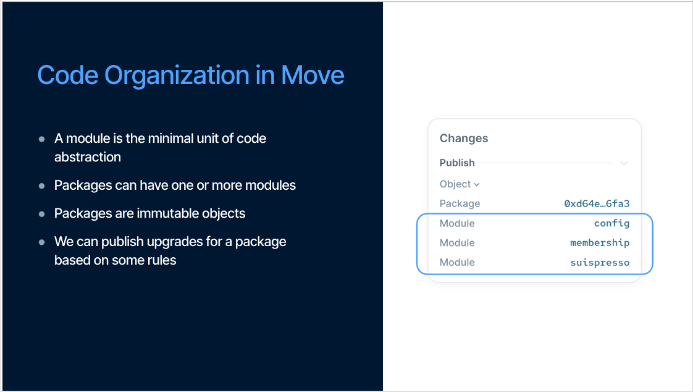

Advanced Smart Contract – Modules, Entry Functions & Practice

link event:
Nội dung chÃnh:
- ​Hiểu rõ vai trò và cấu trúc của Module trong Move
​* Tìm hiểu Entry Function – cách tương tác với contract thông qua call
​* Tổ chức project chuẩn theo cấu trúc Move.toml và sources/
​* Viết thêm các chức năng nâng cao cho token và NFT đã há»c
1. Review lại nội dung há»c tuần trước
Slides xem lại buổi 2 nghe: https://x.tusky.io/Zoo9i
2. Váºy package là gì ?
Theo định nghĩa từ documentation:
Packages are immutable. After you publish a package object on chain to a network, it lives there forever. You cannot directly change the code of an on-chain
Nghĩa là một package là khi được publish trên Blockchain và được xác định là một address. Trong package có thể chứa một hoặc nhiá»u modules.

Riêng phần Package, mình sẽ chia nhỠthà nh từng phần là :
- Package Layout: Cấu trúc của package
- Published Package: Các package đã được published bạn cần lưu ý
- Manifest Structure( Move.toml ): Config file trong sui move contract
- Artifact
2.1 Package Layout
Một package sẽ chứa nhiá»u Modules. Trong từng modules đó bao gồm functions, types...
Đây là và dụ minh hoạ cho một package layout:
package HELLO_WORLD
module a
struct A1
fun hello_world()
module b
struct B1
fun hello_package()
Để tạo package mới, bạn có thể sá» dụng lệnh CLI Sui move new
2.2 Manifest Structure( Move.toml ): Config file trong sui move contract
Một thư mục source move package sẽ luôn có Move.toml là package manifest file bao gồm các metadata cho package đó. File nà y vô cùng quan trá»ng vì nó quản lý các dependencies, đảm bảo được môi trường stable cho move project của bạn và để quản lý project. Đây là cấu trúc của một package layout:

Root của project là tên folder move project của bạn. Trong folder sẽ chứa các files để chạy move project. Trên hình bạn đã thấy các components quan trá»ng Move.toml, Move.lock và thư mục sources.
Đối với Move.toml và Move.lock chịu trách nghiệm trong việc quản lý các dependencies. Còn trong thư mục Source là nơi ta thấy các file module.move. Các file nà y chÃnh là core logic của move code. Ngoà i ra, còn có thư mục test. Đây là nơi để bạn có thể viết test case cho move code của bạn đảm bảo dự án chạy như kì vá»ng và maintain được chất lượng codebase.
Cấu trúc được thiết kế giúp cho các developer có thể quản lý code dễ hơn. Tuy nhiên đây chưa honaf toà n là cấu trúc đầy đủ. Nó còn thêm doc_templates và examples.
Your_Move_Project
├── Move.toml (required)
├── Move.lock (generated)
├── sources (required)
├── doc_templates (optional)
├── examples (optional, test & dev mode)
└── tests (optional, test mode)
- Move.toml file: Đây là package manifest (mình không biết dịch tiếng việt sao nên hiểu như package.json nhé) chứa các metadata cần thiết cho package. Các thông tin trong package đó bao gồm

3. Modules trong Sui là gì ?
á» Sui Move, khi khai báo một smart contract, ta sẽ sá» dụng từ khoá module, giống với ở solidity ta sẽ có từ contract. Đây là syntax khi khai báo smart contract
module <package_name>::<module_name> {
//module code ở đây
}
Nhưng má»i người có thể set up một module thế nà y cũng được:
module <package_name>::<module_name>;
package_name là tên của package mà bạn đã tạo. Và dụ trong lệnh sui move new hello_world thì package name sẽ là hello_world. Còn module_name sẽ là cái tên module mà bạn đã tạo trong package.
Ỡđây bạn cũng có thể xem như module là thư viện con trong package.
TÃnh chất đóng gói (encapsulation) của module giúp cho việc phát triển smart contract trở nên module hóa, có khả năng kết hợp linh hoạt, đồng thá»i nâng cao khả năng tái sá» dụng mã nguồn và tÃnh bảo máºt.
3.1 Từ khoá use - cách để import bất kỳ module
Trong Sui move, use được sá» dụng để import bất kì module. Đây là cấu trúc của cách sá» dụng use:
use <Address/Alias>::<ModuleName>;
Giải thÃch vá» <Address/Alias> và <ModuleName>:
<Address/Alias>là những địa chỉ của package có chứa những module mà ta muốn dùng. Chúng ta thể sỠdụng alias được đặt trong Move.toml mà đã viết ở mục Package manifest. Và dụ:
[addresses]
sui = "0x2"
# Trước là suilend = "0x0" nhưng giỠpackage đã published rồi nên ta có thể thay thế thà nh
suilend = "0xf95b06141ed4a174f239417323bde3f209b972f5930d8521ea38a52aff3a6ddf"
<ModuleName>đơn giản đại diện cho tên của module đó.
Sau đây là một số Sui modules mà bạn sẽ thường sá» dụng:
# Module nà y giúp chúng ta xỠlý liên quan đến string
use std::string;
// https://github.com/MystenLabs/sui/blob/main/crates/sui-framework/packages/move-stdlib/sources/string.move
# Module nà y sẽ giúp khi ta cần các chức năng transfer object từ một account đến account khác
use sui::transfer;
// https://github.com/MystenLabs/sui/blob/main/crates/sui-framework/packages/sui-framework/sources/transfer.move
# dòng dưới đây giúp cho việc tạo object trong module.
use sui::object;
// https://github.com/MystenLabs/sui/blob/main/crates/sui-framework/packages/sui-framework/sources/object.move
# Đây là đoạn import từ sui framework. Giúp ta trong việc đinh nghĩa các thông tin của transaction như là địa chỉ của sender, địa chỉ người ký ...
use sui::tx_context;
// https://github.com/MystenLabs/sui/blob/main/crates/sui-framework/packages/sui-framework/sources/tx_context.move
Bên cạnh việc import một module, Move cho phép bạn import cụ thể đối tượng từ module bao gồm functions và types. Điá»u nà y hữu Ãch khi bạn chỉ muốn một chức năng của module, Giảm việc không cần những đoạn code không cần thiết. Và dụ:
// import function từ một module
use sui_bootcamp::module_one::learn;
// import từ Learner Type
use sui_bootcamp::module_one::Learner;
Không chỉ thế Move cho phép ta import nhiá»u từ module hoặc package bằng cách dùng dấu {}:
// import learn function và Learner type từ module one
use sui_bootcamp::module_one::{learn, Learner};
// import module và Learner type
use sui_bootcamp::module_one::{Self, Learner};
Là m sao để giải quyết vấn đề trùng tên? (Name conflict) 👀 Mình để các bạn tìm câu trả lá»i nhé hoặc thảo luáºn trong nhóm First Movers
4. ​Tìm hiểu Entry Function – cách tương tác với contract thông qua call
Trước tiên bạn cần hiểu vá» Visibility (phạm vi truy cáºp) trong module.
Mỗi phần tá» (member) trong một module đều có visibility tức là mức độ cho phép truy cáºp từ bên ngoà i hay không? Theo mặc định trong Sui move, tất cả các member đều là private nghĩa là anh em chỉ được dùng trong chÃnh module nơi chúng được định nghĩa
Đây là và dụ cho entry function:
entry fun mint(ctx: &mut TxContext) {
let object = HelloWorldObject {
id: object::new(ctx),
text: string::utf8(b"Hello World!")
};
transfer::public_transfer(object, tx_context::sender(ctx));
}
&mut TxContextchÃnh là biến tham chiếu có thể thay đổi được giúp cho việc biết địa chỉ sender là ai để mint được contract nà y. Trong đó hà m transfer ở cuối function không phải trả vá» bất kì giá trị gì mà giúp store object và o địa chỉ sender sau khi publish module.
4.1 Sự khác biệt giữa public và entry trong Sui Move
Trong Sui Move, hai từ khóa public và entry đều dùng để định nghĩa hà m có thể được gá»i từ bên ngoà i module. Nhưng cách mà chúng được gá»i, và ai được quyá»n gá»i lại khác nhau khá rõ.
Khi bạn dùng public fun, hà m đó có thể được gá»i từ bất kỳ đâu: trong cùng module, từ module khác trong cùng package, tháºm chà từ module khác hoà n toà n nếu bạn import nó.
Đây là kiểu viết phổ biến nhất khi bạn muốn chia sẻ logic giữa nhiá»u module. Nhưng nó cũng giống như bạn mở cá»a nhà và má»i má»i người vô :V.
Còn Còn entry fun thì là một kiểu đặc biệt. Hà m có entry chỉ được gá»i trực tiếp từ transaction — tức là từ một Programmable Transaction Block (PTB). Frontend có thể gá»i, và có thể gá»i.
Tất nhiên một entry function vãn có thể gá»i bởi các Move functions khác trong cùng module
module a::m {
entry fun foo(): u64 { 0 }
fun calls_foo(): u64 { foo() } // valid!
}
module a::n {
fun calls_m_foo(): u64 {
a::m::foo() // ERROR!
// ^^^^^^^^^^^ 'foo' is internal to 'a::m'
}
}
Nhưng trong module khác thì không được phép wrap hoặc gá»i lại hà m đó. Điá»u nà y cực kỳ quan trá»ng khi bạn viết những logic nhạy cảm như randomness, mint NFT, hoặc bất kỳ thứ gì có thể bị lợi dụng nếu người khác wrap lại hà m của bạn và thá» chạy trước.
Một chi tiết nữa là entry thường đi chung với &mut TxContext
Nhưng entry không phải không có giới hạn. Vì để đảm bảo an toà n cho hệ thống sẽ có một số quy tắc sau.
4.2 Rule rà ng buộc riêng của Sui đối với entry
-
Chỉ được return các kiểu có drop ability (để Sui đảm bảo không leak object ownership)
-
Ngoà i ra, nếu bạn dùng một object nà o đó trong entry fun, bạn không được phép sá» dụng lại object đó trong một non-entry khác trong cùng PTB. Điá»u nà y giúp Sui tránh được việc cùng một object bị xá» lý trong hai context khác nhau.
4.3 No public entry, Only public or entry
Nếu bạn viết code như thế nà y:
// ⌠Sai: dùng `entry` không cần thiết, vì không bắt buộc để gá»i hà m từ transaction
public entry fun do_something() { /* ... */ }
// ✅ Đúng: dùng `public` thôi là đủ — vừa gọn, lại cho phép return giá trị public
fun do_something_2(): T { /* ... */ }